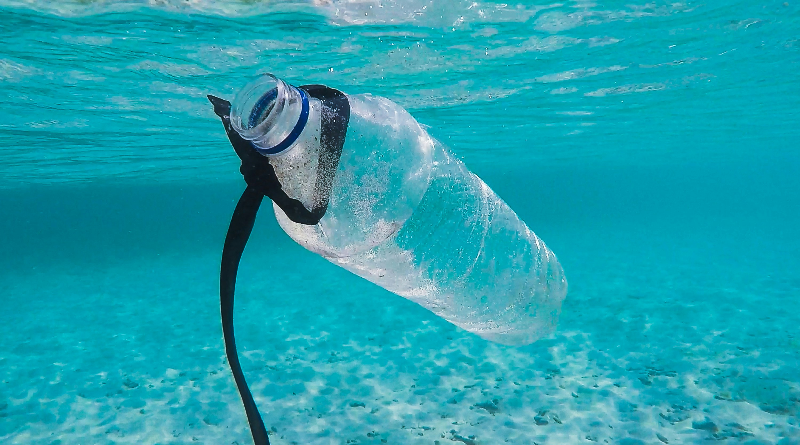

Protecting Life Below Water
Our oceans cover more than 70% of the Earth's surface and are home to an incredible diversity of life. SDG 14 calls on all of us to conserve and sustainably use the oceans, seas, and marine resources. This website explores what students and communities can do right now to make a real difference.
Why Life Below Water Matters

The Plastic Crisis
Every year over 8 million tonnes of plastic enter the ocean, harming marine wildlife and entering the food chain. As students we can lead campus-wide campaigns to reduce single-use plastics and organise local beach cleanups.
- Carry a reusable bottle and bag every day
- Join or start a campus plastic-free pledge
- Volunteer for a local beach or river cleanup

Coral Reefs in Danger
Coral reefs support 25% of all marine species yet cover less than 1% of the ocean floor. Rising temperatures and pollution are causing mass bleaching. Choosing reef-safe sunscreen and supporting marine conservation charities are steps anyone can take.
- Switch to reef-safe sunscreen products
- Donate to or volunteer with coral restoration projects
- Reduce your carbon footprint to slow ocean warming

Sustainable Seafood Choices
Over a third of global fish stocks are overfished. By choosing sustainably sourced seafood and supporting local fisheries that practise responsible methods, consumers and students can drive market change from the dinner table.
- Look for MSC-certified seafood labels
- Eat lower on the marine food chain (sardines, mussels)
- Spread awareness about sustainable fishing in your community
Explore Our Content
Click a topic to learn more about how you can take action.